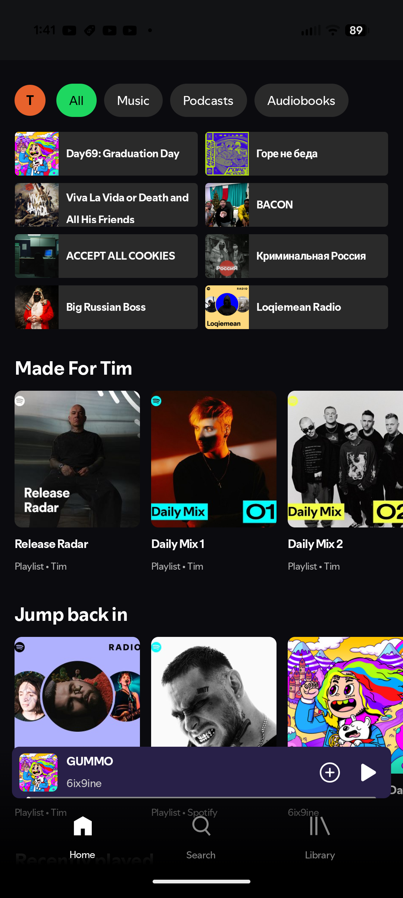

سپاتیفای (Sepotify): موتور استریم و پخش باکیفیت و بدون تأخیر در اندروید
موتور پخش و استریم نیتیو در اندروید با حل کامل مشکل توقف سرویسهای پسزمینه توسط سیستمعامل، دیکود سختافزاری فایلهای Lossless FLAC و سوییچینگ بلادرنگ ترکها بدون هیچگونه بافرینگ و لگ.

مسئله مهندسی و چالشهای معماری
اپلیکیشنهای استاندارد پخش موسیقی در اندروید اغلب با توقف ناگهانی در پسزمینه توسط مکانیزمهای سختگیرانه مدیریت باتری (Battery Savers)، تأخیر مشهود در تغییر آهنگ و کاهش کیفیت به علت فشردهسازی مواجه هستند. پروژه سپاتیفای (Sepotify) با جداسازی چرخه حیات سرویس پخش از رابط کاربری و دسترسی مستقیم به کنترلر صوتی سختافزاری توسعه داده شده است.
نوآوریها و مزایای فنی
پایداری کامل در پسزمینه (Zero Crash)
جداسازی کامل پردازش صدا در یک پروسس مستقل با اولویت Foreground Service که مانع از کشته شدن برنامه حین اجرای تسکهای سنگین میشود.
دیکود بینقص فایلهای بدون افت کیفیت (FLAC)
انتقال بیت به بیت استریم صوتی به AudioTrack بدون دستکاری و ریسمپلینگ نرمافزاری جهت حفظ کیفیت استودیویی.
سیستم کش محلی هوشمند (LRU Cache)
ذخیرهسازی رمزنگاریشده بلاکهای صوتی برای پخش آفلاین و استریم بلادرنگ بدون نیاز به اعتبارسنجی مجدد شبکه.
پخش پیوسته بدون وقفه (Gapless Playback)
تخصیص بافرهای چرخشی در رم برای بارگذاری اولیه ترک بعدی که تأخیر بین آهنگها را به زیر ۵ میلیثانیه کاهش میدهد.